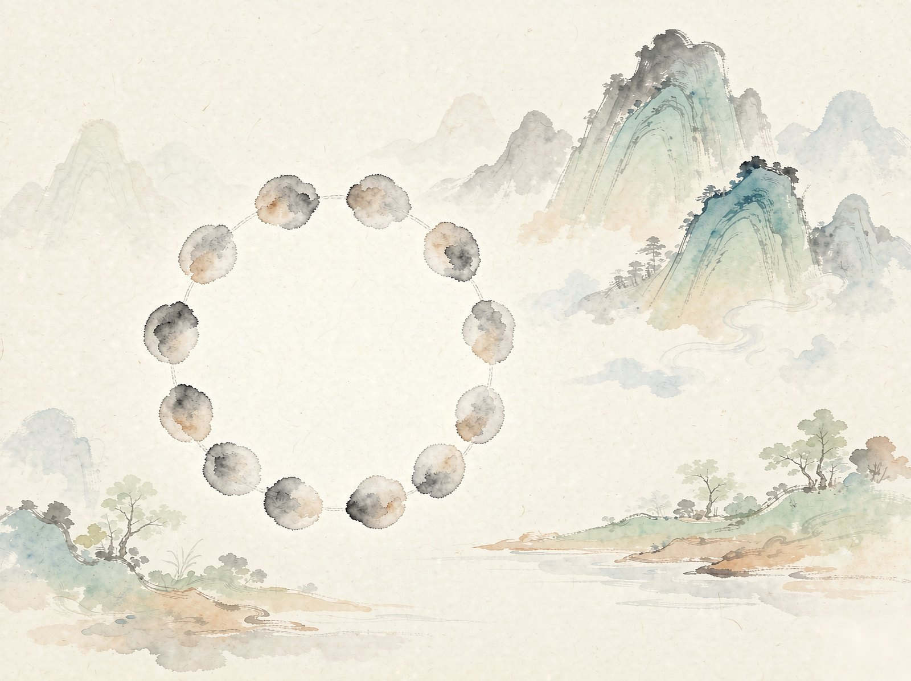

此十义，人所同
出处交代：《礼运》原目为父慈、子孝、兄良、弟弟、夫义、妇听、长惠、幼顺、君仁、臣忠；三字经取其意而改字——兄友弟恭、夫和妇从、长幼序、君敬臣忠。改字多为止于韵与顺于口，骨架未动。
图注按实：图上一圈灰石，不是十点；画取「围而成环」之意，与十义之数不必对应。
前面说的这些，数一数，一共十样。
父慈、子孝，兄友、弟恭，夫和、妇从，长幼有序，君敬、臣忠——从一家到一屋，再到做事的地方。

这十样，不是哪一家的规矩，是人人用得上的一份相处之道。
再看一遍：没有一样是单方面压着另一方的。父要慈，子要孝；一边不做，这一样就断了。

落到心上理解：这十样像十根线，把一家人、一屋人、一队人系在一起。
线断了可以再接，但别把线当绳子使。
拿这十样去量别人，只责对方、不照自己；或把伦常当绳索，捆住人。
知十义是人人共许的相处之道，两边各尽一分；守分而不执相，不拿它压人。
- 十义出《礼记·礼运》，三字经取其意而改字。
- 十样两两相对，没有一样是单方的责任。
- 人所同，是人人用得上，不是人人一个样。
- 守这十样，别把它当绳子。
一、勘俗见。「此十义」常被当作训条背下来。它的源头是《礼运》的人义，讲相处，不是训人。
二、现代对照。一家人把十样摊开看：哪一样是两边都做到了，哪一样只有一边在使劲。
三、承接常变主线。称谓、家庭结构、做事方式都在变（可变之相）；两边各尽一分不变（常）。
四、承接教与学二分。家长先照自己那一边，属施教一侧；孩子学着自己那一边，是自主修习。
接上选择力练习：守分是选择，压人不是义。
此十义，人所同
一 · 字义与句读此，指前四课所举；十义，十种人义；同，共也。
全句释义：这十样相处之道，是人人所共有的。
出处交代：《礼记·礼运》「父慈、子孝、兄良、弟弟、夫义、妇听、长惠、幼顺、君仁、臣忠，十者谓之人义」。三字经改为：父慈子孝（仍其旧）、兄友弟恭（易「良、弟弟」）、夫和妇从（易「义、听」）、长幼序（合「惠、顺」）、君敬臣忠（易「仁」）。
二 · 命题考辨（一）十义有源，不是三字经自造。源流须清，改字须交代；改字多为协韵顺口，义理骨架未动。
（二）「同」是共许，不是同一。人所同，是人人用得上，不是人人一个样。各家分寸不同，义是共许的底线。
（三）十项两两相对。无一项是单方之责；讲伦常而只责一方，即失义之本。
（四）般若范式互参。义是共许的假名，随方设教：世间无实定的伦，有共许的分。知是假名，守分而不执相；执相则伦变成枷。
（五）延伸义理。《坛经》「人虽有南北，佛性本无南北」——位有南北，性无南北；十义讲位，性上讲同。《金刚经》「离一切诸相，即名诸佛」——守十义而不着十义之相。
三 · 跨典互参《礼记·礼运》「十者谓之人义」——十义之名由此立。
《坛经》「人虽有南北，佛性本无南北」——位有南北，性无南北。
《金刚经》「离一切诸相，即名诸佛」——守十义而不着十义之相。
串联全书：自「人之初」至此，由一己之性，推到一家、一屋、一队，收于「人所同」，一脉人伦到此合拢。
四 · 与前后课的张力呼应「首孝悌，次见闻」：十义之首仍是孝悌。
呼应「人不学，不知义」：义不是天生会，是学而知、知而行。
呼应「乃九族，人之伦」：九族是纵向的次第，十义是横向的分。
次第链条继续延伸：…… → 前两课 → 本课（十义收束一脉人伦）。
一、十义中「妇听」一类的旧目，本系列取和合一侧，成人页是否须明说取舍？
二、「人所同」讲成共许，会不会削弱伦常的分量？分寸在哪里？
三、十义之后（自「凡训蒙」起）转入名物度数，人伦一支如何过渡？